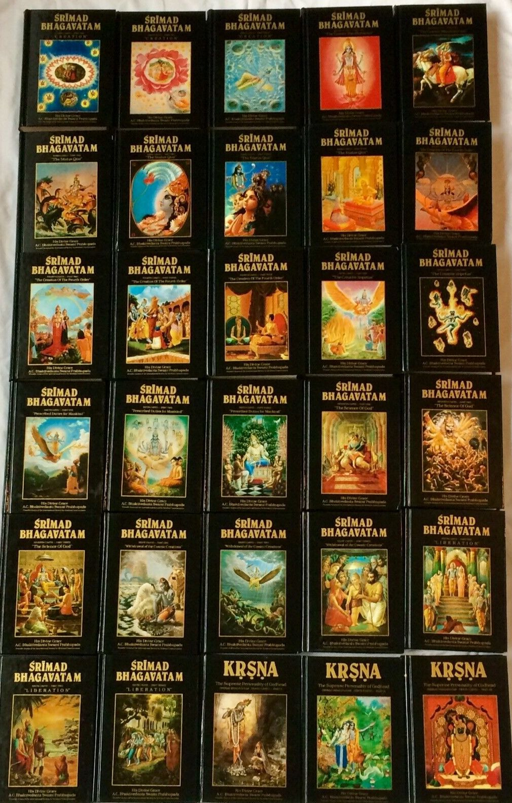

 Srimad-Bhagavatam Preface Introduction Siksastaka Creation The Cosmic Manifestation The Status Quo The Creation of the Fourth Order The Creative Impteus Prescribed Duties for Mankind The Science of God Withdrawal of the Cosmic Creations Liberation